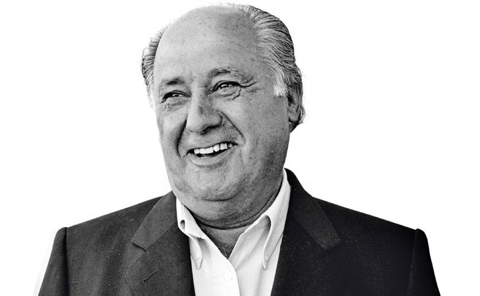

He, youngest of four children,
Ortega was born in Busdongo de Arbás, León, Spain to Antonio Ortega Rodríguez
and Josefa Gaona Hernández from the province of Valladolid and spent his
childhood in León.
He left school and moved to
La Coruña at the age of 14, due to the job of his father, a railway worker.
Shortly after, he found a job as a shop hand for a local shirtmaker called Gala,
which still sits on the same corner in downtown A Coruña, and learned to make
clothes by hand. In 1972, he founded Confecciones Goa (his initials in reverse),
selling quilted bathrobes which Ortega produced using thousands of local women
organised into sewing cooperatives.
In 1975, he opened his first
Zara store with his wife Rosalía Mera, so called because his preferred name
Zorba was already taken.
Today, Zara is part of the
Inditex group (Industrias de Diseño Textil Sociedad Anónima), of which Ortega
owns 59.29%, and aside from over 6,000 stores includes the brands Zara, Massimo
Dutti, Oysho, Zara Home, Kiddy's Class, Tempe, Stradivarius, Pull and Bear,
Bershka and has more than 92,000 employees.
Ortega keeps a very low
profile and, until 1999, no photograph of Ortega had ever been published and is
known for his preference for a simple lifestyle. He refuses to wear a tie and
typically wears a simple uniform of a blue blazer, white shirt, and gray pants,
none of which are Zara products. He is also said to take a very active part in
the production and design process in the company.
When he made a public
appearance in 2000 as part of the warm-up prior to his company's initial public
offering on the stock market in 2001, it made headlines in the Spanish financial
press. However, he has only ever granted interviews to three journalists and his
secrecy has led to the publication of books, such as Amancio Ortega: de cero a
Zara (From Zero to Zara).
In 2011, Ortega announced
his imminent retirement from Inditex, parent company of the Zara chain, stating
that he would ask Inditex vice-president and CEO Pablo Isla to take his place at
the helm of the textile empire. In 2012 Ortega donated about 20 million euro to
Caritas Internationalis, a Roman Catholic relief organisation.
Ortega lost $6 billion as a result of Britain's decision to leave the European Union in June 2016